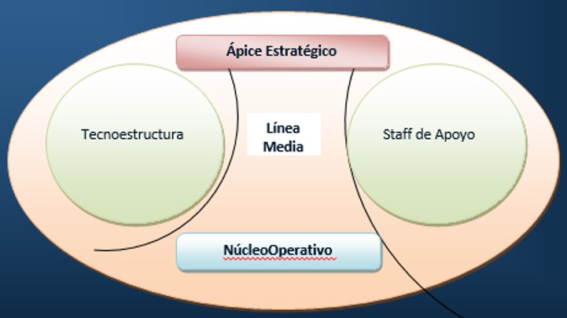

Organización
Es la función mediante la cual se ordenan y armonizan los recursos humanos, materiales
y financieros que dispone la organización para lograr sus metas fijadas durante el
proceso de planificación con la máxima eficiencia.
Se ocupa de:
- Distribuir cada uno de los puestos de trabajo.
- Establece las responsabilidades y atribuciones de sus integrantes.
- Asignación y distribución de los recursos.
- Dispone de un cierto orden para cada cosa.
Parámetros de la estructura organizacional
- Especialización del trabajo
- Departamentalización
- Cadena de mando
- Tramo de control
- Centralización y descentralización
- Formalización
Áreas de la estructura interna de la organización:
